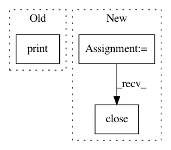

dd3c13d51975d7ca569681dd19639473d19e8e85,server/bert_serving/server/__init__.py,BertWorker,run,#BertWorker#,329
Before Change
print("_run_:%s" % device_lib.list_local_devices())
estimator = Estimator(model_fn, config=RunConfig(session_config=config))
for r in estimator.predict(self.input_fn_builder(), yield_single_examples=False):
print(r)
def run1(self):
estimator = self.get_estimator()
After Change
receiver = context.socket(zmq.PULL)
receiver.connect(self.worker_address)
sink = context.socket(zmq.PUSH)
sink.connect(self.sink_address)
for r in estimator.predict(self.input_fn_builder(receiver), yield_single_examples=False):
send_ndarray(sink, r["client_id"], r["encodes"])
self.logger.info("job done\tsize: %s\tclient: %s" % (r["encodes"].shape, r["client_id"]))
receiver.close()
sink.close()
context.term()
self.logger.info("terminated!")
def input_fn_builder(self, worker):
In pattern: SUPERPATTERN
Frequency: 3
Non-data size: 3
Instances
Project Name: hanxiao/bert-as-service
Commit Name: dd3c13d51975d7ca569681dd19639473d19e8e85
Time: 2018-12-14
Author: hanhxiao@tencent.com
File Name: server/bert_serving/server/__init__.py
Class Name: BertWorker
Method Name: run
Project Name: keras-team/autokeras
Commit Name: 648cbac25d366ec943947673e65fac0004755f65
Time: 2018-01-09
Author: jhfjhfj1@gmail.com
File Name: mkdocs/autogen.py
Class Name:
Method Name: extract_comments
Project Name: ray-project/ray
Commit Name: 28b1f7710c87088bbb266a6a6c644c2e7c828805
Time: 2020-08-03
Author: 2522134184@qq.com
File Name: python/ray/tests/test_multi_node.py
Class Name:
Method Name: test_error_isolation